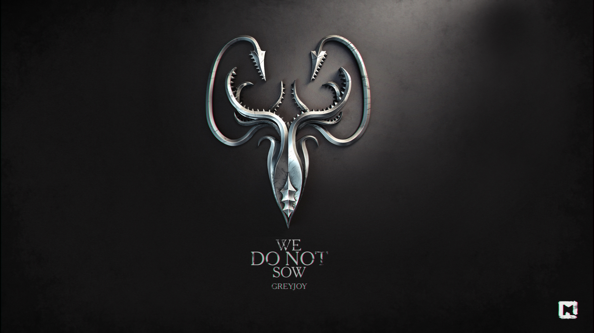

Грейджои
Грейджои (ориг. House Greyjoy) — один из великих домов Вестероса. Управляют Железными островами из замка Пайк. Символ этого дома — золотой кракен на чёрном фоне, а их девиз — «Мы не сеем».
История
До событий сериала
Дом Грейджоев происходит от Серого Короля, легендарного Короля Железных островов. Согласно поверьям, он правил тысячу лет и взял в жёны русалку.
Как и большинство железнорождённых, они верят в Утонувшего Бога.
На момент начала Войны пяти королей во главе дома находился Бейлон Грейджой. За восемь лет до событий Войны пяти королей он поднял восстание против власти Железного трона. Восстание закончилось для Бейлона поражением, двое его сыновей, Родрик и Марон, погибли. Третьего сына, Теона, взял в заложники Эддард Старк, он был отвезён в замок Винтерфелл, где воспитывался и обучался вместе с детьми Старка. Рядом с Бейлоном осталась только дочь Яра.
Известные представители
- Король Бейлон Грейджой, старший сын лорда Квеллона, бывший лорд Железных островов и глава дома. Бывший Король Железных островов и Король Соли и Скал. Был убит в 303 году от З.Э. своим братом Эуроном.
- Леди Аланнис Грейджой, жена короля Бейлона, мать Родрика, Марона, Яры и Теона.
- Родрик Грейджой, старший сын короля Бейлона и леди Аланнис. Был убит в ходе восстания Грейджоя во время битвы у Сигарда в 289 году от З.Э. Джейсоном Маллистером.
- Марон Грейджой, средний сын короля Бейлона и леди Аланнис. Был убит в ходе восстания Грейджоя во время штурма Пайка, где был заживо погребён разрушенной башней в 289 году от З.Э.
- Леди Яра Грейджой, единственная дочь короля Бейлона и леди Аланнис. Леди Железных остров и леди-жнец Пайка.
- Теон Грейджой, младший сын короля Бейлона и леди Аланнис. Бывший заложник Старков, предал их. Но искупил свою вину спасся Сансу Старк. Погиб в возрасте 24 лет от руки Короля Ночи сражаясь в Великой битвы за Винтерфелл в 305 году от З.Э.
- Виктарион Грейджой, младший брат Бейлона. Его судьба неизвестна.
- Эйрон Грейджой, по прозвищу «Мокроголовый», второй младший брат Бейлона. Жрец Утонувшего бога.
- Король Эурон Грейджой, по прозвищу «Вороний Глаз», третий и самый младший брат Бейлона. Бывший глава дома, король Железных островов и король Соли и Скал. Убит сиром Джейме Ланнистером в 305 году от З.Э. во время сожжения Королевской Гавани.
Предки
- Серый Король, основатель дома Грейджоев. Согласно легенде убил морского дракона Наггу, а из его костей построил себе чертог. Взял в жёны себе русалку и украл огонь у Штормового Бога, построив корабль из дерева демона, питавшегося человеческой кровью.
- Лорд Викон Грейджой, стал первым лордом Железных островов, а также лордом Пайка после падения династии Хоаров.
- Лорд Дальтон Грейджой, также известный как «Красный Кракен». Был известен тем, что терзал Западные земли до тех пор, пока морская жена не перерезала ему горло, когда он спал.
- Лорд Квеллон Грейджой, бывший сын Морского Ветра, лорд Железных островов и Пайка, бывший глава дома. Отец Бейлона, Виктариона, Эйрона и Эурона. Погиб в восстание Роберта в 281 году от З.Э. в битве на Мандере.